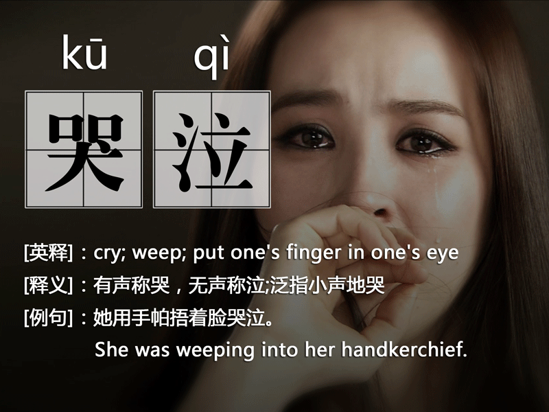

2016-10-11阅读（1,246）
感谢您关注网络孔子学院官方微信公众号！如果您尚未关注，欢迎点击文章下方的二维码关注我们。

《北京北京》是由歌手汪峰作词作曲并演唱的歌曲，收录于2007年发行的专辑《勇敢的心》中，同时也是电视剧《北京爱情故事》的片头曲。汪峰表示，这首歌和《晚安，北京》有一点是相同的，有引起大多数人共鸣的那种东西在里面。唱的时候，他自己也能被歌曲的情绪所感动。这首融合内心情感和城市情感的歌曲，其实是写给每一个人的。每个人对城市都是有很深刻的情感的，而他选择把这样的情感用音乐表达出来。

【解读北京】
《北京北京》是电视剧《北京爱情故事》的片头曲。该剧讲述了一群“流浪”在北京的年轻人面对情感、物质诱惑和现实所做出的选择。一千个读者眼里有一千个哈姆雷特，每个人对北京的理解都是不一样的。
1. 一座大吼一声也无人理睬的城市。
北京很大，每天车水马龙；北京喧嚣、陆离斑驳，人来人往。可是，北京于你而言，或许只有巴掌那么一小块之地，再多的人，再多的角色，都与你无关。翻开通讯录，你能找到几个能够一起喝酒畅谈之人？恐怕更多的是从前的老同学、老朋友吧？可惜，他们此刻与你天各一方，多少年没有见面了？这就是北京，一座看似热闹、实则孤单，你在马路边大吼一声也不会有人理睬的城市。
2. 一座你不得不伪装坚强的城市。
在北京混，谁没有受伤过？背井离乡，为的是什么？一开始，谁不曾心怀梦想与美好？可是，当你找工作处处碰壁时，当你为高物价无奈承受更多怨恨时，当你与人相处体悟到的全是冷漠时，你也一定会一个人躲在被窝里哭泣吧？你也一定会一个人蹲在墙角里独自舔伤口吧？这就是北京，一座时刻伤害你、你却不得不伪装坚强的城市。
3. 一座整天追逐公交的城市。
在北京，你必须非常拼命地工作，才能过得稍微轻松、愉快一点。可即便如此， 也不见得你就能开得上自己的小车。我们经常看到的一幕情景是，每天早上天还没亮，小区外的公交站牌下已是人山人海，大家翘首以盼公交车的到来，由于上班路途实在太远了，很多人根本来不及自己做早餐，有的饥肠辘辘，有的只能选择在路边的黑早点将就着填满肚子。这就是北京，一座每天早上一手拿着鸡蛋灌饼一手拿着豆浆追赶公交车的城市。
4. 一座来回搬家折腾的城市。
北京房价高得离谱，除了为数不多的人能够买得起房外，更多的“北漂”只好租房居住。租房最头痛的是，房东和中介年年提房租，为了节省成本，你不得不像游击队员一样，从城市的这一角，搬到城市的另一角，从城市的三环、四环，搬到城市的五环以外。迁徙，甚至已经成了你生活不可或缺的一部分。这就是北京， 一座逼迫你来回搬家折腾的城市。
5. 一座靠外来人口建设起来的城市。
北京最近几年给人最大的印象就是日新月异，无论是拔地而起的高楼还是地面下的地铁建设，无论是IT产业还是汽车制造业，每天的更新、变化速度都十分惊人。可以说，这里面就有处来务工人员的无限功劳，正是他们的加入与补充，使得北京更具青春与活力。有一项数据显示，为北京发展作出杰出贡献、拥有相当财富的人，有一半以上都来自外地，比如，李彦宏来自山西、俞敏洪来自江苏、潘石屹来自甘肃……这就是北京，一座靠外地人建设起来的城市。
6. 一座需要你承受疼痛的城市。
北京有着所有大都市都有的“城市病”：交通堵塞是每天不变的主题，生活在北京的人，不得不为堵车牺牲着高昂的时间成本；雾霾是北京的常客，北京人恐怕早都已经忘记了蓝天白云、大口舒畅呼吸是什么样子的了；在北京看病难、看病贵，北京的医院总是人满为患，挂个号都要没日没夜地排队，看次感冒都要花上好几百元的费用；北京物价天天像坐火箭一样往上飙升，特别是房子，兜里没揣个三五百万，你连看房的资格都没有。这就是北京，一座病入膏肓却需要你承受疼痛的城市。
北京是一个记忆的城市，若干年后，你会发现在四环的某个天桥上回响着你天真的幻想，在斑驳的胡同里也留下了你浪漫的徜徉。北京是一个奋斗的城市，清晨的地铁站里闪过你穿梭的身影，夜晚的路灯旁看到你青春而又疲惫的脸庞。有多少人怀揣梦想来到北京，又有多少人将最美年华永远留在奋斗的路上。时光不会驻足，梦想若远若近，谁敢频频回首？来不及，也承受不起。
… ……
【原音试听】
【拼音对照歌词】
文章原创丨版权所有丨转发请注出处